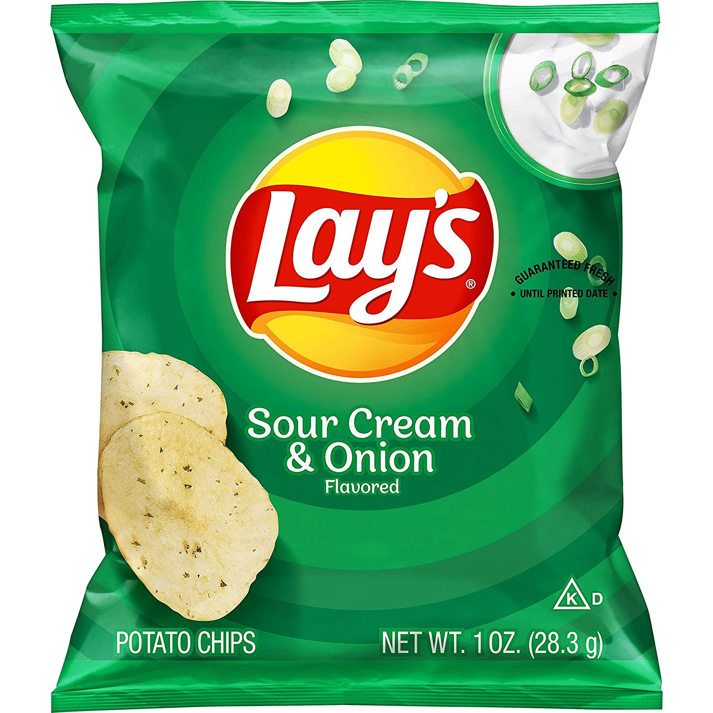

I attended W.T. Woodson HS, the University of Virginia, and Northern Virginia Community College before transferring to RIT as a 2nd-year SWEN major. I enjoy reading books, playing video games, watching classic and arthouse movies, travelling, going to museums and art galleries, and doing genealogical research. I also love everything related to gastronomy XD It is my life goal to visit all the 50 states in the US (I've been to 38 states so far) and all the 7 continents.
Sour cream potato chips are my kryptonite!
Here's the link to the RIT SE website! Enjoy!
link text